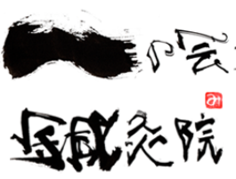

東洋医学に基づいて本格派の鍼灸をご提供します

一の会鍼灸院の鍼術は、一般的に行われている鍼治療とは趣きを異にしています。
当院では、伝統的な診断技術（顔面気色診・舌診・脈診・腹診・背診等々）を用いて全身の「気」の状態を多面的に読み取り、病因と病理機序（発病に至るまでの過程とメカニズム）を明確にします。そこから「証」（東洋医学的診断名）を決定し、全身を視野に入れて鍼を施します。
日本の鍼灸医学は、中国を源流としながらも、日本人の体質に合わせてほんの僅かな刺激で最大限の効果が得られるよう、独自に発展してきました。
病の本質をとらえて「気」を補い、また「邪気」をはらうことで全身の気のアンバランスを調整し、結果として自ずと自然治癒力が発揮され病気や痛みが改善されます。
鍼は先端が鋭利な金属であるため、刺すことで身体を傷つけます。
また灸は点火すると火傷を来します。
それらは本来身体にとって害悪をもたらすものであるため、
身体は本能的に防衛作用（自然治癒力）を発動します。
その結果、鍼灸を施した部位に、全身から「気」が集まるのです。
この身体の防衛作用（自然治癒力）をうまく利用し、
元気（生命エネルギー）の流れを正常に戻し、
病を治癒に導いて行くのが伝統鍼灸の基本的な考え方です。
身体は心の器であるため、身体が元気になると心も安定いたします。
また心と身体は「ひとつ」であるため、身体が元気になると
人生上の様々な問題をご自身で解決する心の力強さが備わってまいります。
また反対に、心のわだかまりやこだわりによって
気のうっ滞（停滞・偏り・アンバランス）」を生じ、病になる場合もあります。
実際の治療では、鍼を施すだけでなく
身体が表現している状態の意味をお伝えしたり、
常に会話を通じて心の整理・安定を図り、自ずと気づきが訪れるような治療を行います。
「問診表」をご記入いただき、それに基づいた問診を行います。
東洋医学独自の診察法（舌診・脈診・腹診など）を行います。
治療～安静休憩。
現在のお身体の状態と治療内容、今後の治療方針や養生方法をご説明します。